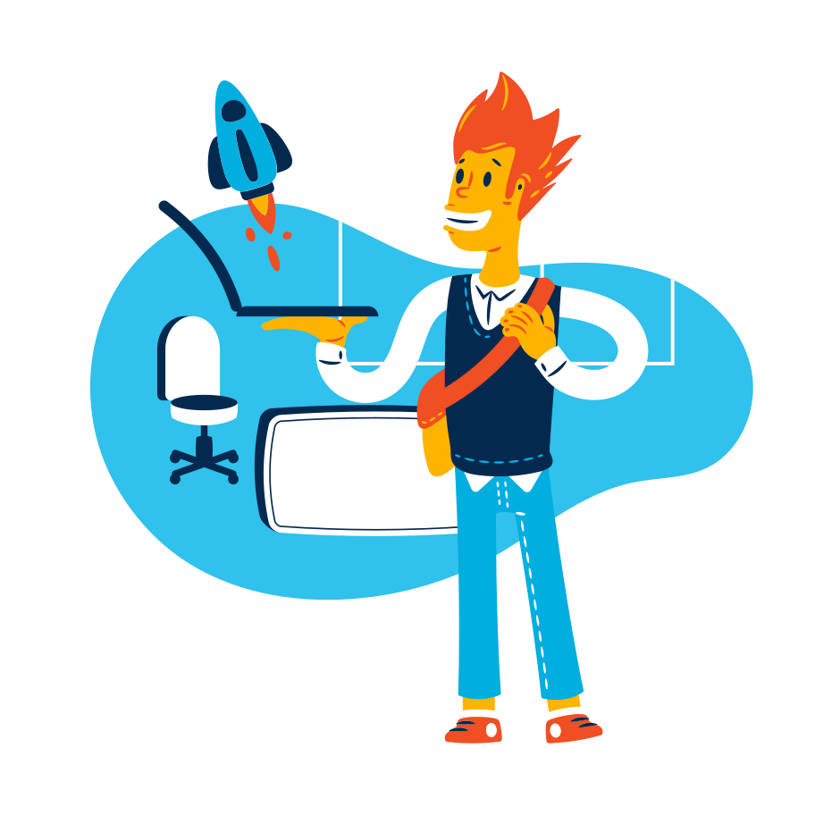

Développeur Intégrateur d'Applications Web
“Il y a quelque de pire que de n’avoir pas réussi, c’est de n’avoir pas tenté.”
Grischka GORSKI
Un profil et un parcours atypiques qui m’ont amené au
développement web...